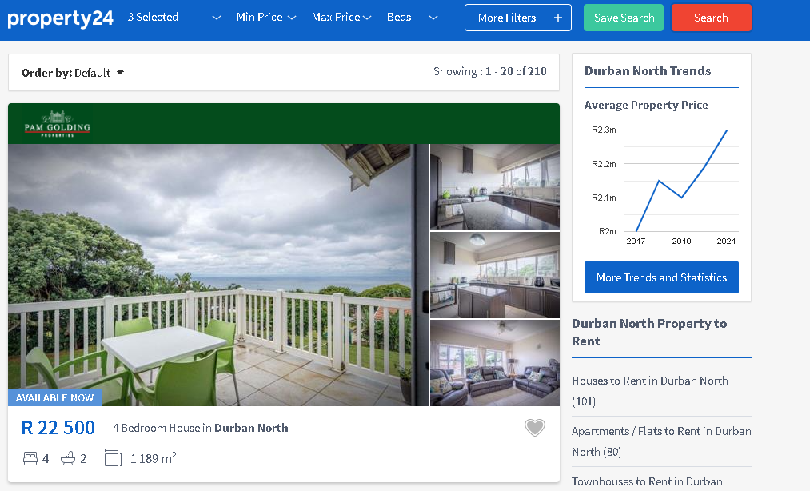
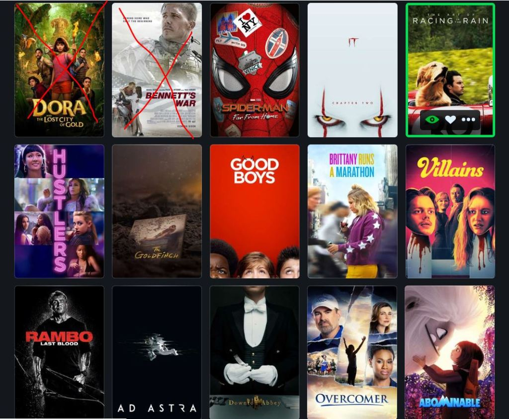

In this project we scrape data from a housing Website and export to an Excel file with the correct formatting.
We achive this using python library BeautifulSoup, and exctract 5 columns with 255 records. Once captured, data
cleaning
using pandas.


The aim was to analyze/explore the covid dataset across the globe. Then select the important fields and clean the errors and nulls in the tables.
Perform data analytics and finally create dashboards using the processed data.
Dashboard had 4 sheets covering the death percentage by country, infection rate by country, and the number of deaths per continent including global numbers.
The forecast of covid death by country in the last quarter of 2021

The objective of this project was to clean the CSV data file using Python libs. This is done using NumPy and Pandas to clean columns with incorrect data and create new columns.
Do regression analysis on the columns and determine which columns contribute to more gross margins.
Using correlation matrix. There is a 0.7 correlation between budget and gross income showing that movies with a higher budget usually make more money in profit after release. The second large contributor to gross income is the viewer rating of each movie.